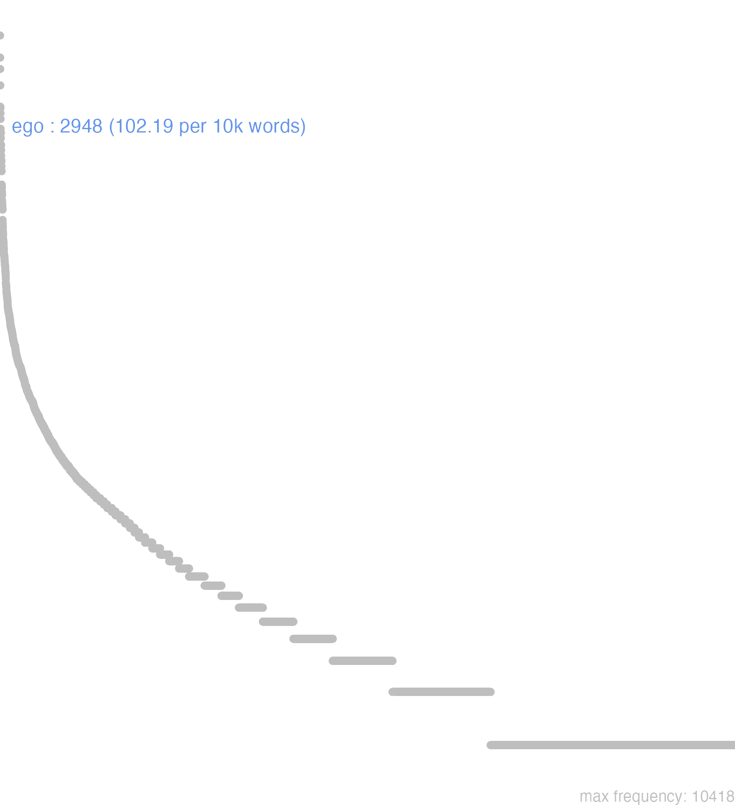

48 ego
48.0.0.1 bases lexicais
id: http://lila-erc.eu/data/id/lemma/100712
classe: pronome
paradigma: pronominal
outras grafias: egomet, egopte
variantes do lema:
no data
mĭhi
mĭhimĕt
mē
mēcum
mēmĕt
ĕgŏ
mĕi
ĕgŏmĕt
no data
48.0.0.2 dicionários tradicionais
ego mĕi, mihi, mē
pron. pess. m. e f.
Obs.: Na língua literária tem valor expressivo, sendo empregado para pôr em relevo uma pessoa em oposição a outra.
pron. pess.
Obs.: -met é uma enclítica reforçativa.
= egone.
acus. e abl. de ego.
mēcum
= cum me.
pron. pess. m. e f.
Obs.: Na língua literária tem valor expressivo, sendo empregado para pôr em relevo uma pessoa em oposição a outra.
1 Eu Cíc. De Or. 1, 39; Cíc. Agr. 2, 55.
egŏmet meīmet, etc.pron. pess.
Obs.: -met é uma enclítica reforçativa.
1 Eu mesmo Cíc. Inv. 1, 52.
egon= egone.
1 Será que eu? Cíc. Nat. 3,8.
mēacus. e abl. de ego.
mēcum
= cum me.
1 Comigo, v. cum.
med
abl. arc. de ego = me.
memet
v. egomet. mihi
dat. de ego.
mihimet
dat. de egomet.
mihīpte
v. ego. 2 mī
= mihi, dat. de ego.
no data
Ego -mei -mihi
m. f.
m. f.
1 Cic. eu.
Egomet accus. e ablat. de Ego Me accus. Virg. por Me ipsum Memet Cic. dat. de Ego Mihi genit. de Ego Mei Plaut. & Ter. por Mihi Me
no data
Mecum
1 comigo
48.0.0.3 dados de corpus
![This chart plots collocate by scoreSUBST, for the headword ego here are all the values plotted: collocate: ad; scoreSUBST: 0. collocate: ab; scoreSUBST: 0. collocate: qui; scoreSUBST: 0. collocate: cum; scoreSUBST: 0. collocate: hic; scoreSUBST: 0. collocate: quidem; scoreSUBST: 0. collocate: quis; scoreSUBST: 0. collocate: uideo; scoreSUBST: 0. collocate: si; scoreSUBST: 0. collocate: de; scoreSUBST: 0. collocate: tu; scoreSUBST: 0. collocate: ut; scoreSUBST: 0. collocate: scribo; scoreSUBST: 0. collocate: ipse; scoreSUBST: 0. collocate: uero; scoreSUBST: 0. collocate: autem; scoreSUBST: 0. collocate: credo; scoreSUBST: 0. collocate: enim; scoreSUBST: 0. collocate: ne; scoreSUBST: 0. collocate: tuus; scoreSUBST: 0. collocate: quod; scoreSUBST: 0. collocate: nihil; scoreSUBST: 0. collocate: nunc; scoreSUBST: 0. collocate: inquam; scoreSUBST: 0. collocate: ita; scoreSUBST: 0. collocate: uolo; scoreSUBST: 0. collocate: apud; scoreSUBST: 0. collocate: puto; scoreSUBST: 0. collocate: pro; scoreSUBST: 0. collocate: nam; scoreSUBST: 0. collocate: ualde; scoreSUBST: 0. collocate: amo; scoreSUBST: 0. collocate: Hercules; scoreSUBST: 0. collocate: mehercule; scoreSUBST: 0. collocate: rescribo; scoreSUBST: 0. collocate: hic2; scoreSUBST: 0. collocate: Antium; scoreSUBST: 0. collocate: satisfacio; scoreSUBST: 0. collocate: erga; scoreSUBST: 0. collocate: niger; scoreSUBST: 0. collocate: hodie; scoreSUBST: 0. collocate: interrogo; scoreSUBST: 0. collocate: sollicito; scoreSUBST: 0. collocate: admoneo; scoreSUBST: 0. collocate: persuadeo; scoreSUBST: 0. collocate: narro; scoreSUBST: 0. collocate: summus; scoreSUBST: 0. collocate: libet; scoreSUBST: 0. collocate: quotiens; scoreSUBST: 0. collocate: perturbo; scoreSUBST: 0. collocate: coniunctus; scoreSUBST: 0. collocate: nuntio; scoreSUBST: 0. collocate: accuso; scoreSUBST: 0. collocate: uerto; scoreSUBST: 0. collocate: tandem; scoreSUBST: 0](./Media/wordcloud__xx101-103-111xx__BY_collocate_scoreSUBST.webp)
![This chart plots collocate by scoreADJ, for the headword ego here are all the values plotted: collocate: ad; scoreADJ: 0. collocate: ab; scoreADJ: 0. collocate: qui; scoreADJ: 0. collocate: cum; scoreADJ: 0. collocate: hic; scoreADJ: 0. collocate: quidem; scoreADJ: 0. collocate: quis; scoreADJ: 0. collocate: uideo; scoreADJ: 0. collocate: si; scoreADJ: 0. collocate: de; scoreADJ: 0. collocate: tu; scoreADJ: 0. collocate: ut; scoreADJ: 0. collocate: scribo; scoreADJ: 0. collocate: ipse; scoreADJ: 0. collocate: uero; scoreADJ: 0. collocate: autem; scoreADJ: 0. collocate: credo; scoreADJ: 0. collocate: enim; scoreADJ: 0. collocate: ne; scoreADJ: 0. collocate: tuus; scoreADJ: 0. collocate: quod; scoreADJ: 0. collocate: nihil; scoreADJ: 0. collocate: nunc; scoreADJ: 0. collocate: inquam; scoreADJ: 0. collocate: ita; scoreADJ: 0. collocate: uolo; scoreADJ: 0. collocate: apud; scoreADJ: 0. collocate: puto; scoreADJ: 0. collocate: pro; scoreADJ: 0. collocate: nam; scoreADJ: 0. collocate: ualde; scoreADJ: 0. collocate: amo; scoreADJ: 0. collocate: Hercules; scoreADJ: 0. collocate: mehercule; scoreADJ: 0. collocate: rescribo; scoreADJ: 0. collocate: hic2; scoreADJ: 0. collocate: Antium; scoreADJ: 0. collocate: satisfacio; scoreADJ: 0. collocate: erga; scoreADJ: 0. collocate: niger; scoreADJ: 2. collocate: hodie; scoreADJ: 0. collocate: interrogo; scoreADJ: 0. collocate: sollicito; scoreADJ: 0. collocate: admoneo; scoreADJ: 0. collocate: persuadeo; scoreADJ: 0. collocate: narro; scoreADJ: 0. collocate: summus; scoreADJ: 2. collocate: libet; scoreADJ: 0. collocate: quotiens; scoreADJ: 0. collocate: perturbo; scoreADJ: 0. collocate: coniunctus; scoreADJ: 1. collocate: nuntio; scoreADJ: 0. collocate: accuso; scoreADJ: 0. collocate: uerto; scoreADJ: 0. collocate: tandem; scoreADJ: 0](./Media/wordcloud__xx101-103-111xx__BY_collocate_scoreADJ.webp)
![This chart plots collocate by scoreVERBO, for the headword ego here are all the values plotted: collocate: ad; scoreVERBO: 0. collocate: ab; scoreVERBO: 0. collocate: qui; scoreVERBO: 0. collocate: cum; scoreVERBO: 0. collocate: hic; scoreVERBO: 0. collocate: quidem; scoreVERBO: 0. collocate: quis; scoreVERBO: 0. collocate: uideo; scoreVERBO: 2. collocate: si; scoreVERBO: 0. collocate: de; scoreVERBO: 0. collocate: tu; scoreVERBO: 0. collocate: ut; scoreVERBO: 0. collocate: scribo; scoreVERBO: 3. collocate: ipse; scoreVERBO: 0. collocate: uero; scoreVERBO: 0. collocate: autem; scoreVERBO: 0. collocate: credo; scoreVERBO: 3. collocate: enim; scoreVERBO: 0. collocate: ne; scoreVERBO: 0. collocate: tuus; scoreVERBO: 0. collocate: quod; scoreVERBO: 0. collocate: nihil; scoreVERBO: 0. collocate: nunc; scoreVERBO: 0. collocate: inquam; scoreVERBO: 2. collocate: ita; scoreVERBO: 0. collocate: uolo; scoreVERBO: 1. collocate: apud; scoreVERBO: 0. collocate: puto; scoreVERBO: 2. collocate: pro; scoreVERBO: 0. collocate: nam; scoreVERBO: 0. collocate: ualde; scoreVERBO: 0. collocate: amo; scoreVERBO: 2. collocate: Hercules; scoreVERBO: 0. collocate: mehercule; scoreVERBO: 0. collocate: rescribo; scoreVERBO: 2. collocate: hic2; scoreVERBO: 0. collocate: Antium; scoreVERBO: 0. collocate: satisfacio; scoreVERBO: 2. collocate: erga; scoreVERBO: 0. collocate: niger; scoreVERBO: 0. collocate: hodie; scoreVERBO: 0. collocate: interrogo; scoreVERBO: 2. collocate: sollicito; scoreVERBO: 2. collocate: admoneo; scoreVERBO: 2. collocate: persuadeo; scoreVERBO: 2. collocate: narro; scoreVERBO: 2. collocate: summus; scoreVERBO: 0. collocate: libet; scoreVERBO: 2. collocate: quotiens; scoreVERBO: 0. collocate: perturbo; scoreVERBO: 1. collocate: coniunctus; scoreVERBO: 0. collocate: nuntio; scoreVERBO: 2. collocate: accuso; scoreVERBO: 1. collocate: uerto; scoreVERBO: 1. collocate: tandem; scoreVERBO: 0](./Media/wordcloud__xx101-103-111xx__BY_collocate_scoreVERBO.webp)
![This chart plots collocate by scoreADV, for the headword ego here are all the values plotted: collocate: ad; scoreADV: 0. collocate: ab; scoreADV: 0. collocate: qui; scoreADV: 0. collocate: cum; scoreADV: 0. collocate: hic; scoreADV: 0. collocate: quidem; scoreADV: 3. collocate: quis; scoreADV: 0. collocate: uideo; scoreADV: 0. collocate: si; scoreADV: 0. collocate: de; scoreADV: 0. collocate: tu; scoreADV: 0. collocate: ut; scoreADV: 0. collocate: scribo; scoreADV: 0. collocate: ipse; scoreADV: 0. collocate: uero; scoreADV: 3. collocate: autem; scoreADV: 0. collocate: credo; scoreADV: 0. collocate: enim; scoreADV: 2. collocate: ne; scoreADV: 0. collocate: tuus; scoreADV: 0. collocate: quod; scoreADV: 0. collocate: nihil; scoreADV: 0. collocate: nunc; scoreADV: 2. collocate: inquam; scoreADV: 0. collocate: ita; scoreADV: 2. collocate: uolo; scoreADV: 0. collocate: apud; scoreADV: 0. collocate: puto; scoreADV: 0. collocate: pro; scoreADV: 0. collocate: nam; scoreADV: 2. collocate: ualde; scoreADV: 2. collocate: amo; scoreADV: 0. collocate: Hercules; scoreADV: 0. collocate: mehercule; scoreADV: 0. collocate: rescribo; scoreADV: 0. collocate: hic2; scoreADV: 2. collocate: Antium; scoreADV: 0. collocate: satisfacio; scoreADV: 0. collocate: erga; scoreADV: 0. collocate: niger; scoreADV: 0. collocate: hodie; scoreADV: 2. collocate: interrogo; scoreADV: 0. collocate: sollicito; scoreADV: 0. collocate: admoneo; scoreADV: 0. collocate: persuadeo; scoreADV: 0. collocate: narro; scoreADV: 0. collocate: summus; scoreADV: 0. collocate: libet; scoreADV: 0. collocate: quotiens; scoreADV: 2. collocate: perturbo; scoreADV: 0. collocate: coniunctus; scoreADV: 0. collocate: nuntio; scoreADV: 0. collocate: accuso; scoreADV: 0. collocate: uerto; scoreADV: 0. collocate: tandem; scoreADV: 2](./Media/wordcloud__xx101-103-111xx__BY_collocate_scoreADV.webp)
![This chart plots collocate by scoreFUNC, for the headword ego here are all the values plotted: collocate: ad; scoreFUNC: 40. collocate: ab; scoreFUNC: 40. collocate: qui; scoreFUNC: 0. collocate: cum; scoreFUNC: 30. collocate: hic; scoreFUNC: 0. collocate: quidem; scoreFUNC: 0. collocate: quis; scoreFUNC: 0. collocate: uideo; scoreFUNC: 0. collocate: si; scoreFUNC: 20. collocate: de; scoreFUNC: 20. collocate: tu; scoreFUNC: 0. collocate: ut; scoreFUNC: 20. collocate: scribo; scoreFUNC: 0. collocate: ipse; scoreFUNC: 0. collocate: uero; scoreFUNC: 0. collocate: autem; scoreFUNC: 0. collocate: credo; scoreFUNC: 0. collocate: enim; scoreFUNC: 0. collocate: ne; scoreFUNC: 20. collocate: tuus; scoreFUNC: 0. collocate: quod; scoreFUNC: 20. collocate: nihil; scoreFUNC: 0. collocate: nunc; scoreFUNC: 0. collocate: inquam; scoreFUNC: 0. collocate: ita; scoreFUNC: 0. collocate: uolo; scoreFUNC: 0. collocate: apud; scoreFUNC: 20. collocate: puto; scoreFUNC: 0. collocate: pro; scoreFUNC: 20. collocate: nam; scoreFUNC: 0. collocate: ualde; scoreFUNC: 0. collocate: amo; scoreFUNC: 0. collocate: Hercules; scoreFUNC: 0. collocate: mehercule; scoreFUNC: 0. collocate: rescribo; scoreFUNC: 0. collocate: hic2; scoreFUNC: 0. collocate: Antium; scoreFUNC: 0. collocate: satisfacio; scoreFUNC: 0. collocate: erga; scoreFUNC: 20. collocate: niger; scoreFUNC: 0. collocate: hodie; scoreFUNC: 0. collocate: interrogo; scoreFUNC: 0. collocate: sollicito; scoreFUNC: 0. collocate: admoneo; scoreFUNC: 0. collocate: persuadeo; scoreFUNC: 0. collocate: narro; scoreFUNC: 0. collocate: summus; scoreFUNC: 0. collocate: libet; scoreFUNC: 0. collocate: quotiens; scoreFUNC: 0. collocate: perturbo; scoreFUNC: 0. collocate: coniunctus; scoreFUNC: 0. collocate: nuntio; scoreFUNC: 0. collocate: accuso; scoreFUNC: 0. collocate: uerto; scoreFUNC: 0. collocate: tandem; scoreFUNC: 0](./Media/wordcloud__xx101-103-111xx__BY_collocate_scoreFUNC.webp)
![This charts plots the frequency of lemma by author_Frequencies. The Cicero subcorpus registers the highest normalized frequency, with the value of 140.91 and an absolute frequency of 2262. The Cicero subcorpus follows, with a normalized frequency of 140.91 and an absolute frequency of 2262. the subcorpus with the least normalized frequency is Caesar with the normalized value of 0.76 and an absolute freqeuncy of 2. here are all the values: subcorpus: Caesar ; normalized frequency: 2 ; absolute frequency: 0.755344059218974. subcorpus: Cicero ; normalized frequency: 2262 ; absolute frequency: 140.913508260447. subcorpus: Horatius ; normalized frequency: 158 ; absolute frequency: 140.307255128319. subcorpus: Ovidius ; normalized frequency: 35 ; absolute frequency: 60.0549073438572. subcorpus: Phaedrus ; normalized frequency: 53 ; absolute frequency: 80.4615151055109. subcorpus: Sallustius ; normalized frequency: 55 ; absolute frequency: 51.0156757258139. subcorpus: Seneca ; normalized frequency: 326 ; absolute frequency: 60.8424628133107. subcorpus: Suetonius ; normalized frequency: 1 ; absolute frequency: 11.0253583241455. subcorpus: Tacitus ; normalized frequency: 9 ; absolute frequency: 30.8959835221421. subcorpus: Vergilius ; normalized frequency: 26 ; absolute frequency: 50.1930501930502. subcorpus: Hieronymus ; normalized frequency: 21 ; absolute frequency: 47.1804088968771](./Media/barchart__xx101-103-111xx__lemma_BY_author_Frequencies.webp)
![This charts plots the frequency of lemma by genre_Frequencies. The Prosa.epistolográfica subcorpus registers the highest normalized frequency, with the value of 283.26 and an absolute frequency of 1069. The Prosa.epistolográfica subcorpus follows, with a normalized frequency of 283.26 and an absolute frequency of 1069. the subcorpus with the least normalized frequency is Prosa.histórica with the normalized value of 16.31 and an absolute freqeuncy of 67. here are all the values: subcorpus: Prosa.histórica ; normalized frequency: 67 ; absolute frequency: 16.3100367584411. subcorpus: Prosa.filosófica ; normalized frequency: 430 ; absolute frequency: 70.8390306584735. subcorpus: Prosa.oratória ; normalized frequency: 1035 ; absolute frequency: 99.3730377425518. subcorpus: Prosa.epistolográfica ; normalized frequency: 1069 ; absolute frequency: 283.261347677469. subcorpus: Poesia.lírica ; normalized frequency: 158 ; absolute frequency: 132.918314124674. subcorpus: Poesia.didática ; normalized frequency: 88 ; absolute frequency: 74.6458563067266. subcorpus: Poesia.trágica ; normalized frequency: 54 ; absolute frequency: 46.907574704656. subcorpus: Poesia.épica ; normalized frequency: 26 ; absolute frequency: 50.1930501930502. subcorpus: Prosa.ficcional ; normalized frequency: 21 ; absolute frequency: 47.1804088968771](./Media/barchart__xx101-103-111xx__lemma_BY_genre_Frequencies.webp)
![This charts plots the frequency of lemma by period_Frequencies. The I.a.C. subcorpus registers the highest normalized frequency, with the value of 116.5 and an absolute frequency of 2503. The I.a.C. subcorpus follows, with a normalized frequency of 116.5 and an absolute frequency of 2503. the subcorpus with the least normalized frequency is II.d.C. with the normalized value of 26.18 and an absolute freqeuncy of 10. here are all the values: subcorpus: I.a.C. ; normalized frequency: 2503 ; absolute frequency: 116.499883639749. subcorpus: I.d.C. ; normalized frequency: 414 ; absolute frequency: 63.3318035796237. subcorpus: II.d.C. ; normalized frequency: 10 ; absolute frequency: 26.1780104712042. subcorpus: IV.d.C. ; normalized frequency: 21 ; absolute frequency: 47.1804088968771](./Media/barchart__xx101-103-111xx__lemma_BY_period_Frequencies.webp)
mihi crede
Cic.Att.1.17.11
acredita em mim. [JDD]
narra mihi
Cic.Att.2.7.2
Conta-me. [JDD]
quo me vertam
Cic.Att.2.14.2
Para onde me voltar? [JDD]
prorsus mihi persuadet
Cic.Att.2.20.1
ele me convence totalmente. [JDD]
hic mihi ignosces
Cic.Att.3.15.4
Me perdoa aqui. [JDD]
nam ego dissensi
Cic.Att.2.1.8
pois eu discordei. [JDD]
Varro mihi satis facit
Cic.Att.2.21.6
Varrão me enche de satisfação. [JDD]
ego enim idem sum
Cic.Att.3.5
pois eu continuo igual. [JDD]
perfer si me amas
Cic.Att.5.21.7
Tolera, se me estimas. [JDD]
redde nunc natum mihi
Sen.Ag.967
Devolve-me agora o meu filho. [JDD]
saluti si me amas consule
Cic.Att.2.19.1
Olha por tua salvação, se me estimas.” [JDD]
itaque quo me uertam nescio
Cic.Lig.1
Assim, não sei para onde eu me volto. [JDD]
vix enim mihi exaudisse videor
Cic.Att.4.8A.1
pois tenho a impressão de mal ter ouvido. [JDD]
sequere nunc me in campum
Cic.Att.4.15.7
Me segue agora ao Campo de Marte. [JDD]
nam ad me non accessit
Cic.Att.5.2.2
pois não veio à minha casa. [JDD]
nulla mihi inquam relligio est
Hor.S.1.9.70
“Eu não tenho nenhuma superstição”, digo eu. [JDD, de outra edição]
saepe ita me di iuvent
Cic.Att.1.16.1
Muitas vezes, assim me ajudem os deuses. [JDD]
hoc mihi eius modi non videbatur
Cic.Att.2.16.1
Isto não me parecia deste modo. [JDD]
ego apud improbos meam retinuissem invidiam
Cic.Att.2.19.4
eu, diante dos ímprobos; tinham mantido o ódio a mim. [JDD]
me mi Pomponi valde paenitet vivere
Cic.Att.3.4
Eu, meu querido Pompônio, estou profundamente arrependido de viver [JDD]
nam castellum munitum habitanti mihi prodesset
Cic.Att.3.7.1
Um castelo fortificado me seria útil para morar. [JDD]
in me enim ipsum peccavi vehementius
Cic.Att.3.15.4
pois contra mim próprio cometi faltas mais graves. [JDD]
valde enim est in me liberalis
Cic.Att.4.6.4
Pois ele é muito generoso comigo. [JDD]
itaque me etiam admonuisti ut gauderem
Cic.Att.5.19.3
E assim me lembraste de também ficar contente. [JDD]
ego uero istud non postulo inquies
Cic.Lig.12
“Mas eu não postulo isso”, dirás. [JDD]
studia spero me summa habiturum omnium ordinum
Cic.Att.2.21.6
Espero ter um grande apoio de todas as ordens. [JDD]
percussisti autem me etiam de oratione prolata
Cic.Att.3.12.1
Por outro lado, me acertaste também um golpe com relação à publicação do meu discurso. [JDD]
in provincia mea fore me putabam Kal.Sextilibus
Cic.Att.5.14.1
Acho que estarei em minha província nas calendas de sextil [1º. de agosto]. [JDD, de outra edição]
quocumque me uerti argumenta senectutis meae uideo
Sen.Ep.12.1
Para onde quer que eu me vire, vejo evidências de minha velhice. [JDD]
hoc facere illum mihi quam prosit nescio
Cic.Att.2.1.6
Não sei quão útil é para mim ele fazer isso. [JDD]
Κορινθίων et Ἀθηναίων puto me Romae habere
Cic.Att.2.2.2
Acho que tenho em Roma a “Constituição de Corinto” e a “Constituição de Atenas”. [JDD, de outra edição]
displiceo mihi ne c sine summo scribo dolore
Cic.Att.2.18.3
Estou insatisfeito comigo mesmo e escrevo não sem uma grande dor. [JDD, de outra edição]
id si putas me posse sanari cures velim
Cic.Att.3.12.2
Gostaria que cuidasses disso, se achas que eu posso ser salvo. [JDD]
de re Piliae quod scribis erit mihi curae
Cic.Att.4.16.4
Quanto ao que me escreves a respeito do assunto de Pília, cuidarei disso. [JDD]
ibi forum agit cum ego sim in provincia
Cic.Att.5.17.6
Ali ele administra a justiça, enquando eu estou na província. [JDD]
de tuo autem negotio saepe ad me scribis
Cic.Att.1.19.9
Me escreves com frequência sobre o teu assunto. [JDD]
et scito Curionem adulescentem venisse ad me salutatum
Cic.Att.2.8.1
E fica sabendo que o jovem Curião veio até mim para me saudar. [JDD]
o suavis epistulas tuas uno tempore mihi datas duas
Cic.Att.2.12.1
Ó que agradáveis as duas cartas tuas entregues a mim ao mesmo tempo! [JDD]
sed tamen ista ipsa me varietas sermonum opinionumque delectat
Cic.Att.2.15.1
mas, mesmo assim, essa mesma variedade de conversas e de opiniões me deleita. [JDD, de outra edição]
mater tua et soror a me Quintoque fratre diligitur
Cic.Att.1.8.1
Tua mãe e tua irmã têm a minha estima e a do meu irmão Quinto. [JDD, de outra edição]
neque enim me desperare vis ne c temere sperare
Cic.Att.3.18.2
pois nem queres me desesperar nem esperas sem motivo. [JDD, de outra edição]
ego iam aut rem aut ne spem quidem exspecto
Cic.Att.3.22.4
Eu já aguardo os fatos ou nem a esperança sequer. [JDD]
ego in Epirum proficiscar quom primorum dierum nuntios excepero
Cic.Att.3.23.5
Eu partirei para Epiro assim que receber notícias dos primeiros dias. [JDD, de outra edição]
plura cum scribere uellem nuntiatum est uim mihi parari
Sal.Cat.35.5
Quando eu queria escrever mais, me foi anunciado que uma violência está sendo preparada contra mim. [JDD, de outra edição]
ex ea die si me amas παράπηγμα ἐνιαύσιον commoveto
Cic.Att.5.14.1
A partir desse dia, se gostas de mim, move o teu calendário. [JDD, de outra edição]
verum tamen videbare mihi tempora peregrinationis commodius posse discribere
Cic.Att.2.1.4
mas me parece que podias organizar mais adequadamente os teus períodos de viagens. [JDD]
ante diem viii Kal haec ego scribebam hora noctis nona
Cic.Att.4.3.5
Eu escrevo esta no nono dia antes das calendas [23] na nona hora da noite [entre 2h e 3h da madrugada]. [JDD, de outra edição]
me cum erat hic illi ne aduocatus quidem uenit umquam
Cic.Cael.10
Ele estava comigo; nunca veio para aquele, nem mesmo como apoiador. [JDD]
mihi uero licet et semper licebit dignitatem tueri mortem contemnere
Cic.Phil.1.14.2
A mim, na verdade, é e sempre será permitido proteger minha dignidade, desprezar a morte. [JDD]
habebo apud posteros gratiam possum me cum duratura nomina educere
Sen.Ep.21.5
terei prestígio entre os pósteros, posso levar comigo nomes que vão perdurar. [JDD]
48.0.0.4 Diagrama de Zipf
